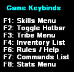

The HUD
Labelled Basic HUDUp the top left you will see the Game Keybinds Hotkeys. Press the corresponding F keys to bring up each menu respectively.
Website Menu
Press F6 to bring up the website menu, where the rules, help and achievements are displayed.
Commands Menu
Press F7 to bring up the useful commands menu.
Stats Menu
Stats Menu Picture{kind=link}
Press F8 to open your tracked statistics!
Q Menu
Q Menu (Gif){kind=link}
Hold Q to open the Q menu. This menu allows you to build props, structures, plant seeds in the farming menu, equip tools, see resources, cast spells, change options and playermodel, as well as change prop protection and voice channel.
{kind=link}
The hotbar appears down the bottom after pressing F2, and you can bind tools/weapons in the hotbar by holding Q, and dragging the item you want into the hotbar slot you want it in.
Tribe Menu
Tribe Menu Picture{kind=link}
The Tribe menu (F3) will allow you to make your own - or join - tribes. You can get tribe perks as it levels up which can be accessed in the "Tribe Perks" Tab.
Inventory Quick View
Inventory Picture{kind=link}
Press F4 to bring up the Inventory.
Skills Menu
Skills Menu Picture{kind=link}
Press F1 to bring up the skills menu. This will show you your current levels for different aspects of gameplay. These are leveled automatically, for example, mining a rock will give you mining xp.
{kind=link}
{kind=link}
{kind=link}
{kind=link}
{kind=link}